Using Image-Based Lighting
Introduction
Qt Quick 3D supports IBL (Image-Based Lighting) to illuminate scenes or individual materials.
IBL is a lighting technique that allows scenes to be illuminated with images. This is especially useful when you want to create realistic lighting and reflections in indoor and outdoor scenes.
You can use any image file for IBL, but it is recommended to use 360º HDR (High Dynamic Range) images. HDR images have a much higher dynamic range than for example JPEG or PNG images. A higher dynamic range provides more realistic lighting through a great range of luminance levels from very bright to very dark.
The following example demonstrates the lighting effect on an object using an HDR image vs a single directional light:
| Light | Smooth Dielectric material | Rough Dielectric material | Smooth Metallic material | Rough Metallic material |
|---|---|---|---|---|
| Single directional light | 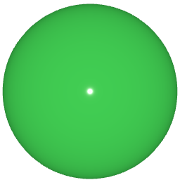 | 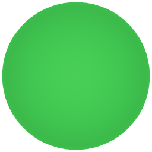 | 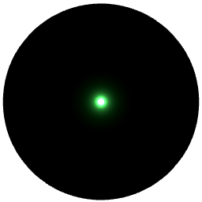 | 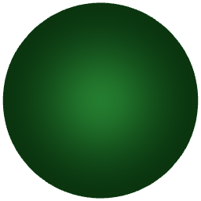 |
| Image-based light | 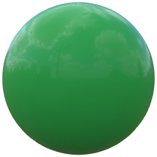 | 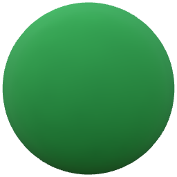 | 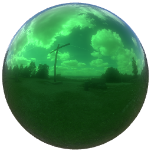 | 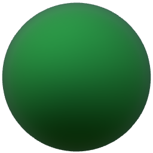 |
Scene Lighting
To illuminate a scene using an image you'll add the image as a Texture to the lightProbe property.
lightProbe: Texture {
source: "maps/OpenfootageNET_garage-1024.hdr"
}
Once you have selected an image, IBL is set up for your scene. All models in the scene are illuminated by the light probe by default.
Note: You can also combine IBL with any other light source to compliment the lighting effect on an object.
Now that you have IBL set up for your scene, let us have a look at the different properties for the probe. In many cases the default values provide a satisfying result, but you can tweak the following property values depending on the image and desired result:
- Exposure The amount of light emitted by the light probe.
- Horizon Cut-Off Increasing the value adds darkness (black) to the bottom half of the environment, forcing the lighting to come predominantly from the top of the image (and removing specific reflections from the lower half).
- Orientation This property when defines the orientation of the light probe. Orientation is defined in terms of euler angles in degrees over the x, y, and z axes.
| Property | Metallic material | Dielectric material |
|---|---|---|
| Default settings | ||
| Exposure | 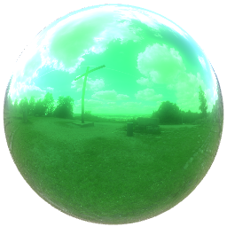 | 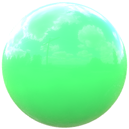 |
| Horizon Cut-off | 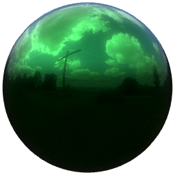 | 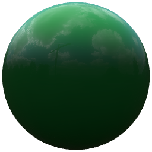 |
| Orientation | 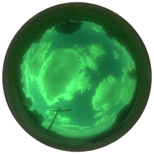 | 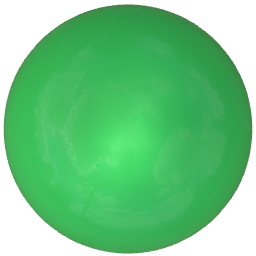 |
Material Lighting
To use image-based lighting only on one material instead of a whole scene, or use a separate light probe for a model already illuminated by image-based lighting, set the image as the light probe for the material.
Once you have followed the steps above, you have a separate light probe set for the material. This light probe overrides the scene light probe if there is one specified.
Pre-generating IBL cubemap
When IBL is used, a cubemap for the IBL image needs to be generated by the application. By default this happens during application startup and can be quite slow, especially on embedded and mobile devices. It is therefore possible to pre-generate this cubemap using Balsam. Simply run Balsam with the .hdr file as input and it will output a cubemap file with the same name as the input but with a ktx file extension. One can then reference this file in the lightProbe property's associated Texture, and Qt will then load the pregenerated cubemap without any costly processing at run time.
Manual baking
As an example, let's assume the application uses a .hdr image for its light probes or the skybox:
View3D {
environment: SceneEnvironment {
backgroundMode: SceneEnvironment.SkyBox
lightProbe: Texture {
source: "environment.hdr"
}
probeOrientation: Qt.vector3d(0, -90, 0)
}
// ...
}
This is fully functional, assuming environment.hdr is available at run time. However, loading the .hdr image involves expensive pre-processing. This can be avoided by running:
balsam environment.hdr
The result is a new file environment.ktx. Shipping this instead of the .hdr file and changing the Texture source provides significantly faster loading times.
lightProbe: Texture {
source: "environment.ktx"
}
Build time baking via CMake
Manually running balsam on assets is not always ideal. Therefore, applications are recommended to rely on CMake to automatically perform the same task at application build time.
This is done by using the qt6_add_lightprobe_images CMake function provided by the Quick3D component of the Qt6 package:
...
find_package(Qt6 COMPONENTS Quick3D)
...
qt6_add_lightprobe_images(application_target "ibl_assets"
PREFIX
"/ibl"
FILES
"environment.hdr"
)
Replace application_target with the appropriate target. Here, there is no need to run balsam manually on environment.hdr anymore, and the .hdr file does not need to be shipped with the application. Rather, during the build balsam will be invoked automatically, and an environment.ktx will be added to the application resources at :/ibl/environment.ktx. The lightProbe's Texture needs to then reference this file.
lightProbe: Texture {
source: "qrc:/ibl/environment.ktx"
}
Note: Setting PREFIX so that the final name in the resource system has a path matching the .qml file's location allows using a relative source path instead of having to provide an absolute path with the qrc scheme.
In addition to PREFIX, the keyword BASE is also available. The behavior follows that of qt6_add_resources. For example, the following leads to generating :/ibl/maps/environment.ktx:
qt6_add_lightprobe_images(application_target "ibl_assets"
PREFIX
"/ibl"
BASE
"../data/shared"
FILES
"../data/shared/maps/environment.hdr"
)
Like in qt6_add_shaders, the OUTPUTS keyword is available to allow specifying a completely custom name for the file in the resource system. For example, the following also generates :/ibl/maps/environment.ktx:
qt6_add_lightprobe_images(application_target "ibl_assets"
PREFIX
"/ibl"
FILES
"../data/shared/maps/environment.hdr"
OUTPUTS
"maps/environment.ktx"
)
Note: For each entry in the FILES list, there must be a corresponding entry in OUTPUTS.